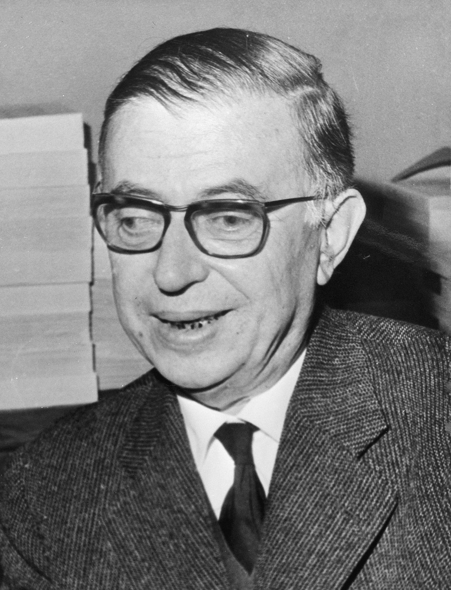

Jean-Paul Sartre
Vida
Nació en París en 1905, filósofo Francés y precoz lector de clásicos
de su misma nacionalidad, en 1915 ingresó a Henri IV , el segundo
matrimonio de su madre fue considerado por él como traición por que se
vio obligado a moverse a Rochelle un año después de haber ingresado y
no volvería a su ciudad natal hasta 1920.
En 1933 se trasladó a Alemania por un beca donde se haría amigo de
Heidegger, quien sería una de sus fuentes principales para basar su
filosofía, y en 1938 publicó la náusea, fue movilizado al anuncio de
la 2da guerra mundial, donde en 1941 regresaría a París, donde dos
años después saldría a la luz el ser y la nada, también, fue fundador
de les temps modernes revista de izquierda influyente en la posguerra.
En 1964 rechazó el premio nobel por su idea de calmar a los bandos en
la guerra fría falleciendo en 1980 en su querida París.
Trayectoria Profesional
Fue filósofo y escritor siendo sus temas principales la novela, teatro,ensayo y crítico, sus temas son el existencialismo, superracionalismo. Estudió en Henri IV, Cours Hottermer y universidad de París donde enseñó como profesor y fundador de Les temps modernes.
Obras destacadas
- El Ser y La Nada
- La Náusea
- Las Moscas
- A Puerta Cerrada
- Las Manos Sucias
- El Existencialismo es un Humanismo
- La Puta Respetuosa
Análisis de un fragmento de una de las obras
El Ser y La Nada
Para Sí, un tipo de estructura ontológica radicalmente diferente. Esta estructura ontológica es mía; yo me preocupo por mí; y, sin embargo, esa preocupación mía me descubre un ser que es mi ser sin ser-para-mi.
- ¿Qué significa ontológica?
- ¿Qué quiere expresar?
- ¿Qué movimiento es?
- ¿Crees que existimos para otros o con otros?
- ¿El autor tiene razón en su escrito?